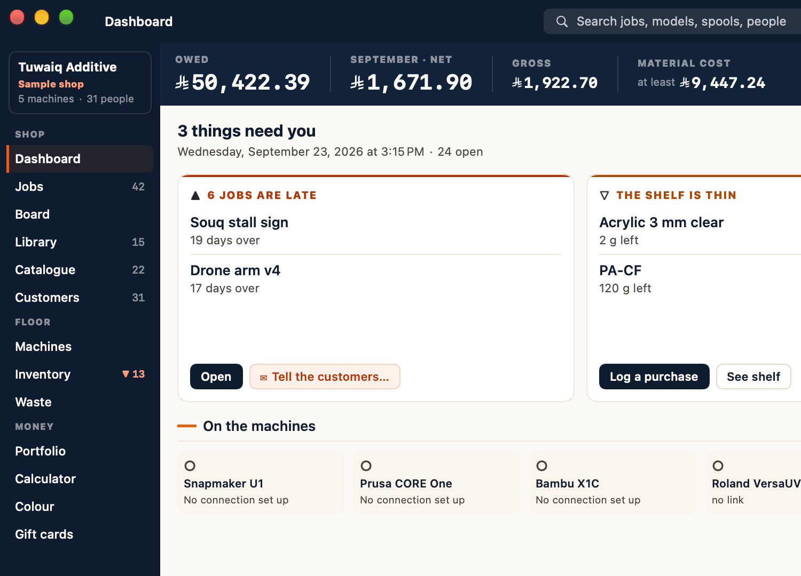
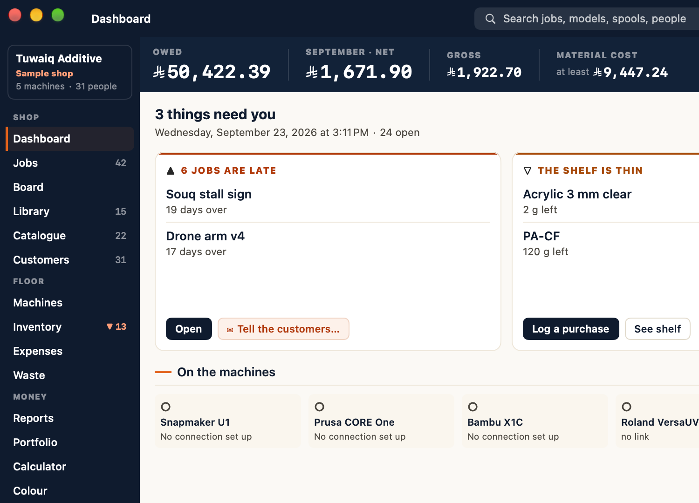

Khayt is the production desk for 3D print shops — quoting, Kanban queue, e-invoicing and filament inventory in one app. Entirely offline. Free. No account, no telemetry.
Talks live to your printersOctoPrintBambu LabKlipperPrusaLinkDuetRepetier
One continuous thread
From a file on the desk to money in the bank.
Khayt — خيط — means thread. Every job is one unbroken run: nothing is re-keyed, nothing is guessed twice, and the numbers at the end correct the estimate at the start.
01
Quote
Drop an STL, 3MF or g-code on the calculator. Khayt reads the geometry and prices it against your machine, material and margin.
Calculator
02
Schedule
An approved quote becomes a job on the board, assigned to a machine with its colours and parts already attached.
Production queue
03
Print
Live temperature and progress from OctoPrint, Bambu, Klipper and friends — with stall and offline alerts.
Printer API
04
Invoice
A signed e-invoice in the language your shop chose, with the tax added the way your country does it.
30 country presets
05
Correct
The finished job reports what it really used, and the estimator calibrates itself against your shop.
Measured, not assumed
Every screen, purpose-built
Real screens. Not mockups.
8 designs · light & dark · switch any time
Kanban production queue
Drag orders across Pending → Printing → Post-Processing → QC → Done. Per-machine queue views, shift-start checklists, print-failure photo capture, on-hold with reason, and part-level colour assignment.
One app, two ways to run it
From side-business to production floor
Choose the mode that fits how you work. Khayt hides what you don't need and keeps what you do — the same app grows from a small side-business to a full production floor, and you can switch any time.

Simple
A small shop, made easy
Everything a side-business needs — orders, clients, invoicing and revenue, plus focused sales reports. The advanced production and accounting depth stays out of the way until you want it.

Professional
The whole production floor
The full toolkit — profit margins, expenses, multi-location, team roles, deep analytics, forecasting and every integration. Built for a real print shop running at scale.
What's in each mode
Every mode keeps the personal core. Simple adds selling and invoicing; Professional adds the full production-business depth. Nothing is locked behind a paywall — it's all free.
What Simple and Professional each include
Feature
Simple
Professional
Personal core
Cost calculator (FDM + resin)
Included
Included
Production queue (Kanban)
Included
Included
Print-file library & 3MF converter
Included
Included
Colour mixer & matcher
Included
Included
Filament inventory
Included
Included
Printers, monitoring & waste log
Included
Included
Selling & invoicing
Clients & customer orders
Included
Included
Invoices & payments
Included
Included
Online storefront & customer portal
Included
Included
Gift cards & store credit
Included
Included
Sales reports
Included
Included
Production business
Full analytics & forecasting
Not included
Included
Signed e-invoicing
Not included
Included
Proforma, milestone & credit notes
Not included
Included
Purchase orders & payables
Not included
Included
Multiple locations & print-farm view
Not included
Included
Team accounts & roles
Not included
Included
Machine maintenance & downtime
Not included
Included
Loyalty tiers & break-even
Not included
Included
Expense tracking & accounting sync
Not included
Included
Swipe the table to see both columns
Everything you need
Built for print shop owners
One app handles your entire workflow — from first quote to final invoice, entirely offline.
Drop in an STL, 3MF or g-code and it prices the geometry itself, then learns from what the printer reports when the job finishes. Live breakdown of material, machine time, electricity, labour, overhead, failure rate and margin — and every estimate says whether the rate behind it was measured or assumed. FDM, Resin and multi-material AMS/MMU costing.
03
E-Invoicing & Worldwide Tax
Cryptographically signed e-invoices with TLV QR codes, submitted automatically where your country requires it, plus proforma invoices, milestone billing, BNPL links (Tabby, Tamara, Stripe) and VAT export. Tax is added to a price rather than folded into it, with thirty country presets — and documents print in the language you chose.
04
Live Printer API
Connect OctoPrint, Moonraker (Klipper), Bambu Lab, PrusaLink, Duet and Repetier. Real-time temperature and print progress inside the queue, plus error / offline / stall alerts over Telegram, webhook or email.
05
Inventory Management
Track FDM spools and Resin bottles with auto-deduction on completion, drying logs, smart reorder alerts with draft POs, price history, per-location stock and overcommit warnings.
06
Analytics & Break-Even
Revenue, machine P&L, operator performance, retention, production heatmap, cost trends and end-of-day PDF reports. Break-even card and NPS surveys.
07
Catalog, Gift Cards & Portfolio
Reusable product SKUs for one-tap quotes, sellable gift cards and store credit, plus a finished-print portfolio gallery to show off your best work.
08
Client CRM & Customer Portal
Profiles with credit limits, multi-currency, loyalty tiers and automatic discounts, plus a live LAN customer portal with quote approval and QR order tracking.
09
Integrations & Access
Salla/Zid webhooks, Telegram notifications, iCal feed and a public intake form. Embedded LAN server, a native iOS companion app (queue, inventory, live printer monitoring, NFC spool scanning), auto-updater and operator PIN lock with Admin/Tech/Sales roles.
Shipped recently
New since you last looked
Khayt 3.7 stops guessing what your prints cost. Drop a model on the calculator and it becomes a quote; when the job finishes, the printer reports the filament and the hours it actually used, and the estimator corrects itself against them. Every estimate now says whether the rate behind it was measured or assumed. Khayt also works outside the Gulf for the first time — tax added to a price rather than folded into it, thirty country presets, and documents printed in the language you chose rather than that language and Arabic.
One drop zone takes STL, 3MF and g-code. Khayt reads the geometry and prices it against your own machine, material and margin — then, when the job finishes, the printer reports what it really used.
phone-stand.3mf4.2 MB
Filament148 g
Print time5h 17m
Machine & labour22.10
Costs you41.80
Quote86.40
Measured, not assumed
Self-correcting estimates
The more you print, the closer it gets
Estimated
142 g
Actual
148 g
Once a few jobs have finished with measured figures, the estimator calibrates against your shop instead of a fixed assumption.
Tax, worldwide
Prices that add up the way your country does
Tax added to a price rather than folded into it — so a shop quoting 100 invoices 108.25. Thirty country presets, alongside the signed e-invoicing that was already there.
Subtotal100.00
Sales tax · 8.25%8.25
Invoiced108.25
Documents
Your paperwork, your language
Quotes, invoices, credit notes and delivery notes print in the language your shop chose — and you pick which language goes second.
EnglishFrançaisEspañolالعربية
Print library
Keep your files where you keep your files
Network drive//shop-nas/models
Object storage backupnightly
Your data
A restore can't overwrite newer work
Checked before syncing3 newer records kept
Opt-in
An optional cloud. Never a requirement.
End-to-end encrypted — the server only ever sees ciphertext, and your sync passphrase never leaves your machine. Turn the cloud off and Khayt works exactly as it always has. The plans are published — $9/mo for Cloud — and every one of them is free while the beta runs. See the plans and what each service sends →
BETA
Encrypted cloud sync
Opt-in sync across your devices, end-to-end encrypted — the server only ever sees ciphertext. Your sync passphrase never leaves your machine. Turn it off and Khayt runs 100% offline as before.
BETA
Team accounts
Invite staff to your shop with roles (manager / operator / viewer). Everyone shares the same live cloud data; the desktop enforces what each role can do.
BETA
Online storefront
Publish a public shop page customers can browse — prices, a cart, deposits and promo codes. Orders land straight in your queue as draft quotes; checkout can take a deposit via your own payment link.
BETA
Customer order tracking
Share a link and your customer follows a live progress timeline — received → printing → finishing → ready — in their own language, updating as you advance the order.
BETA
Reviews & ratings
Collect a star rating + comment after each order via a simple link; your average rating shows on the storefront and in the app.
BETA
WhatsApp & SMS
Send automated order updates over WhatsApp or SMS (Twilio, WhatsApp Cloud API, Unifonic or your own webhook), and run marketing campaigns to a customer segment.
BETA
AI shop assistant
Ask questions about your own shop — “what’s overdue?”, “revenue vs last month?” — in a chat that answers only from your data. Bring your own key; it stays on your machine.
BETA
Smart reorder & POs
Forecasts when each material runs out from real usage and the grams already committed to open orders, then drafts purchase orders ahead of time.
BETA
Label & QR printing
Print QR labels for orders (scan to the tracking page) and spools (scan to inventory), plus a one-way accounting webhook to push paid invoices to QuickBooks, Zoho or Xero.
9 languages
Built for global makers
Full Arabic RTL layout is a core design decision — not an afterthought. Khayt also ships in German, Spanish, French, Turkish, Chinese and Japanese, with instant switching from anywhere in the app. Portuguese (Brazil) makes nine, and dates and numbers now follow the language you picked rather than defaulting to English.
هيئة الزكاة · المرحلة الثانية موقّعة · مُجازة من فاتورة
Source available
Free to use. Yours to inspect.
Khayt is free to use and will remain free. The source is on GitHub — read it, fork it, run it and modify it for your own shop. Licensed under the Functional Source License (FSL-1.1-Apache-2.0): the only thing you can’t do is repackage it to compete with Khayt — and each release converts to the permissive Apache-2.0 license two years after it ships. If it helps your business, consider sponsoring.
Not Electron in a Mac costume — a real Mac app: native windows, the menu bar, Quick Look, Shortcuts. It runs the same tax, pricing and estimator rules as the app above, unchanged and proved against them test for test, so it reads the same book and gets the same answers.
It is an alpha. Keep the stable app installed alongside it — they read the same file, so nothing is lost either way, but an alpha is not what a shop should be billing from yet.
Where this goes: the native Mac app becomes the main Khayt on macOS, a native Windows app follows it, and the app above keeps running everywhere — it is not going away.